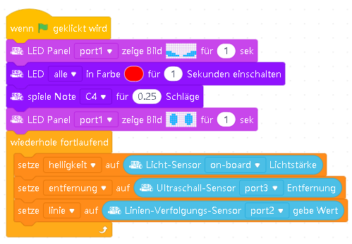

Arbeite diese Checkliste vor jeder Unterrichtsreihe und nach einem Geräte- oder Rechnerwechsel ab. Stelle den mBot für alle Motortests auf den kleinen Ständer, sodass die Räder den Boden nicht berühren.
Verbindung über USB
- Starte mLink beziehungsweise die an der Schule eingerichtete Verbindungskomponente. Das kleine Statusfenster darf anschließend geschlossen werden; der Dienst läuft im Hintergrund weiter.
- Öffne mBlock im Browser oder das installierte Programm. Erstelle eine neue Datei, entferne gegebenenfalls das voreingestellte Gerät und füge den mBot hinzu. Alternativ öffnest du die vorbereitete Datei
mBot-Start. - Verbinde den mBot per USB-Kabel mit dem Computer. Stelle ihn auf den Ständer und schalte ihn ein.
- Stelle in mBlock die Verbindung im Live-Modus her.
- Wird eine Firmware-Aktualisierung angeboten, wähle die vorgesehene Online-Firmware und starte die Aktualisierung. Unterbrich weder Verbindung noch Stromversorgung. Nach dem Signalton verbindest du mBlock erneut mit dem mBot.
- Gib das Testprogramm ein, führe es aus und speichere es unter
mBot-Start. - Prüfe damit RGB-LEDs, Summer, Onboard-Taster, Lichtsensor, Ultraschallsensor und Linienverfolgungssensor.

Verbindung über das 2,4-GHz-Funkmodul
Das Makeblock-Modul ist kein gewöhnliches WLAN-Modul. Es arbeitet mit einem passenden 2,4-GHz-USB-Dongle.
- Schalte den mBot ein.
- Drücke die Taste am 2,4-GHz-Modul, bis dessen LED schnell blinkt.
- Stecke den weißen 2,4-GHz-USB-Dongle in den Computer.
- Wähle in mBlock Verbinden - Serial 2.4G - Verbinden.
- Nach erfolgreicher Kopplung verbinden sich Dongle und mBot später normalerweise automatisch, solange beide eingeschaltet beziehungsweise angeschlossen sind.
Fehlersuche
| Problem | Prüfung |
|---|---|
| mBot wird nicht gefunden | USB-Kabel, Port, Stromschalter, mLink-Dienst und ausgewähltes Gerät prüfen. |
| Motoren laufen sofort los | mBot aufbocken, Programm stoppen und Firmware beziehungsweise Startprogramm prüfen. |
| Sensorwerte ändern sich nicht | RJ25-Stecker und richtigen Port kontrollieren; im Testprogramm die passenden Sensorblöcke auswählen. |
| 2,4-GHz-Verbindung scheitert | Kopplungsreihenfolge wiederholen und sicherstellen, dass Modul und Dongle zusammengehören. |